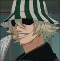

Forums galactiques > Assemblée Galactique : diplomatie officielle > Passage obligé : Présentations
| GrosChéri Respect diplomatique : 36  29/05 ETU 09:10 | Score : 7 Détails GrosChéri, bisounours depuis des temps immémoriaux descendît de son nuage en forme de coeur par l'intermédiaire d'un superbe arc-en-ciel, pour apporter l'amour et des bisous à tous les peuples de cet univers.
Bonjours mes amis, Je suis GrosChéri, Prince des grandes Passions amoureuse à base de bisous, et je vous apporte l'Amour. Je suis descendu car je trouve votre univers morose avec un manque flagrant de Passion et de Bisou. Ici s'étendait des Désert de cendres, j'en fis des terres fertiles pleine de Bisous Ici se trouvait le Temple de la Haine, j'en fit un Havre de paix pleins de Bisous et d'Amour Ici se dressait un Champ de ruines, j'en fit une fière cité pleine de Passion Ici coulait un Fleuve de Sang, j'en fit une rivière Rose Bonbon. Car je suis GrosChéri, le prince des Grandes Passions amoureuse, et le Bisou Sacré marche avec moi. | ||
| Crimpra Respect diplomatique : 15  29/05 ETU 21:58 | Score : 8 Détails Un homme sombre et ténébreux se leva et s'exprima d'une voix d'outretombe :
Je suis Crimpra et je suis l'un des derniers Nosfératus encore vivants. pause Certain pensait ma race éteinte mais il seront surpris de ma détermination à la faire renaitre. pause Je serais intransigeant envers ceux qui me mettraient des batons dans les réacteurs. Il se tourna vers le père Anderson, le paladin,le fléau des mort-vivants Il serait sage pour nous d'oublier nous précédants conflits et de s'ignorer afin d'éviter les effusions de sang Bien que j'en buverais bien dans une carotide. Sur ceux il se rassit parmit ses amis de la confédération de Deldrimor | ||
| Onizuka Respect diplomatique : -2  31/05 ETU 17:39 | Score : 2 Détails Je me nomme Onizuka,Maître de la farce!!(dinde farcie et autres)
Commandant,consentant a délivré de ma fortune au pôvre et au non fôrtuné!! Et puis bah voila!!! Eikichi Onizuka,22ans,prof stagiaire | ||
| Mordos Baughlir Respect diplomatique : 17  01/06 ETU 10:03 | Score : 5 Détails Salutations, commandants !
Je me présente : Mordos Baughlir, fils de deux anciens commandants du coin. Un dénommé Morcar Baughlir, et une certaine Hinata... Je ne m'attarderais pas sur eux, qui de toute façon, sont des personnages du passé, et tiens à vous informer que, commerçant dans l'âme, je me ferais un plaisir de fournir des commandants sur demande. Le client est empereur, dit-on par chez moi. | ||
| Ketze Respect diplomatique : 346  01/06 ETU 11:52  | Score : 7 Détails Ketze se leva alors à son tour d'un air menaçant et pris la parole.
Bonjour je suis le commandant Ketze, Seigneur de Commoragh. Je tiens à préciser immédiatement que je n'obéirai à personne. Je suis mon propre chef et je massacrerai personnellement tout commandant ayant décidé de se mettre sur ma route. Mes ennemis seront sévèrement punis, leurs populations réduites en esclavage et je prendrai un malin plaisir à les torturer, à me baigner dans leur sang, à leurs infliger les pires souffrances possibles, à leur... Ketze s'arrêta de parler se rendant compte qu'il était en train de s'emporter et retourna à sa place. Son message était passé, l'assemblée était plongée dans le silence : tous avaient lu dans ses yeux la folie qui le rongeait. | ||
| Maldauror Respect diplomatique : 11  01/06 ETU 21:40 | Score : 11 Détails Assemblée, 21h30, grande salle;
Les commandants present à l'assemblé discutaient sur la prochaine loi anti-tyran lorqu'IL arriva. On entendit tout dabors un bruit de pas, ils n'étaient pas prés de l'oublier, qui donnaient l'impression que celui qui marchait le faisait en planant au dessus du sol. Minute de silence. La porte s'ouvrit, lentement. Un soufle étrange, calme et contrôlé. IL entra. Un homme de grande taille, les cheveux noirs mais sans doutes tein fit quelque pas dans la salle. Les commandants en oubliaient de respirer. Il était impossible de LUI donner un age, Il avait l'apparence d'un jeune homme de 30 ans mais son visage, pourtant calme, avait la dureté et exprimais la tristesse de celui qui a trop vecut. IL se plaça au milieu de l'assemblé. IL prit la parole. "Commandantes, commandants;" SA voit est calme, maitriser et empreinte d'un ton étrange, empreint d'une grande sagesse. "Je viens aujourd'hui parmit vous pour que chacun ne puissent m'ignorer... Je n'ai pas grand chose à dire, sinon que mon peuple n'aspire qu'a la paix mais qu'il n'hesitera pas à se defendre en cas d'agression. Je vous salut, la nuit ne fait que commencer et j'ai beaucoup à faire." IL se retourna brusquement, s'éloignant d'un pas vif. Juste avant de sortir, IL se tourna la tête et sourit. Decidement, IL avait de trés longues canines. | ||
| Boss Nass Respect diplomatique : 22 03/06 ETU 18:12 | Score : 9 Détails Une créature étrange, jamais aperçue auparavant entra dans l'Assemblée Galactique pour la première fois. C'était un amphibien, avec des doigts palmés d'une couleur verdâtre, des yeux jaunes ; mais il ne semblait pas terrifiant. Ses énormes pieds à trois doigts rayés d'une multitude de trais marron faisait merveille. Il s'avança, et commenca son discours :
<<- Bonjour tissa peuple Galactique. Missa Boss Nass, chef des Gungans, noussa peuple pacifique, mais pas sans défense contressa ennemis. Noussa Gungans vivons sous l'eau, à Otho Gunga cité sous-marine et capitale de noussa, sommes en symbiose avec peuple de la surface, Naboo. Eux sa très fort connaissance technologique, noussa faire commerce avec eux et échangoussa plein de choses. Aussi, noussa espérons faire connaissance avec personnes ici, dans Assemblée Galactique pour établir relations amicales.>> Boss Nass, Chef des Gungans. | ||
| Melfice Respect diplomatique : 8  04/06 ETU 16:43 | Score : 4 Détails Un homme s’avança alors à son tour. Il semblait jeune mais l’on sentait à travers l’intensité de son regard qu’il avait déjà beaucoup d’expérience et, lorsqu’il prit la parole, toute la salle se tut immédiatement, comme frappé de mutisme face a cet homme dégageant une sorte d’aura de puissance terrifiante. D’un ton calme, il se présenta a l’assemblée.
« Salutation, je suis le commandant Melfice, seigneur de DarkAtlantis et je viens au nom de ma planète afin de vous faire part de notre « ressurection ». Nous avons enfin les moyens de rendre à notre planète sa splendeur et sa puissance d’antan. Notre peuple n’a, à l’heure actuelle, aucune envie de guerres ou de batailles, mais que tous sachent que nous avons les moyens de nous défendre et que quiconque se mettra en travers de notre chemin périra. » Sur ces paroles, l’homme sortit de la salle, qui restait silencieuse, encore sous le joug du sentiment indescriptible que dégagé Melfice. | ||
| SIRIUS_BLACK Respect diplomatique : 4  04/06 ETU 17:31 | Score : 3 Détails L’assembler fut encor sous le choc quand on entendit un bruit de pas. <tak…tak…tak…>.
Soudain, un homme inconnu de tous s’avança, le regard sombre, d’une voix dure il pris la parole et dit : Commandants, commandantes, Je suis SIRIUS_BLACK, souverain de la planète SIRIUSUS, nous somme puissant et nous somme pour le bien et la paix, mon peuple passe avant tout pour moi et gare a celui ou celle qui ose lui faire du mal.Je suis peut-être nouveaux mais je suis prés a donner ma vie pour les miens. Sur c’est mots, d’un sourire mystérieux il se retourna, fredonnant une chanson il marqua une pose et s’en alla. | ||
| Empereur Kenny Respect diplomatique : 35  04/06 ETU 23:29 | Score : 6 Détails Après la sortie de Sirius black, une petite boule orange s’avança vers le pupitre. Il avait la taille d’un enfant d’école primaire, et les gardes se demandèrent s’ils ne devaient pas empêcher se petit enfant d’aller plus loin, surtout lorsque la boule se mit à parler sous sa capuche. Tous les commandants se mirent à rire, et voyant que personne ne comprenait se qu’il disait, la petite boule ôta sa capuche. Après l’avoir enlever les commandants aperçut le visage méconnaissable d’un enfant, ils se calmèrent aussitôt et le laissèrent parler.
« Bonjour commandants, je suis l'Empereur Kenny! J'arrive dans cette galaxie avec une arme inconnu de tous et je suis sur que vous voulez tous savoir de quoi il s'agit. Je vais donc vous la présenter: -cette arme est biologique et 100 % naturelle -cette arme est composée que de deux molécules inséparables. -c'est une arme de destruction massive. Et oui je possède Térence et Philippe... Tous mes petits vaisseaux de marchands d'élite se déplace, dans l'espace, entouré de terrence et phillipe. Cette petite arme s'approche discrètement de sa cible, et sécrète un nuage d'une odeur très désagréable qui atomise n'importe quelle cerveau d’être vivant. Maintenant que mes armes sont présentées, passons à moi. Les cicatrices sur mon visage sont les résultats de mes expériences pour la fabrication de l’arme. Et mon corps et celui-ci car je viens juste de me réincarner sur ma planète. Et oui je ne fais que mourir à cause d’accident plus ou moins grave. Mais cette fois je ferai attention, ce serait un gars modèle qui me battra pour le juste, pour la paix, pour l’indépendance, et pour éviter que nos enfants ne deviennent comme Cartman… (Gros et vulgaire) » Sur ces mots, Kenny remit sa capuche et partit s’asseoir à coté des autres commandants, en essayant de ne pas se faire étouffer à coté des commandants les plus imposants. | ||
| NeMoS Respect diplomatique : 51  05/06 ETU 11:48 | Score : 0 Détails Dans un coin de l'assemblée un hologramme s'alluma,...
Après avoir demandé la parole bonjour, On m'appelle NeMoS, je suis un représentant d'une planète dont le chaos n'est pas terminé, je fais ma présentation par holovision car je n'ai plus de vaisseaux intacts. Je suis issu d'un peuple pacifique, la guerre ne m'intéresse pas, le pouvoir non plus seul le bien être de mes sujets et la justice m'importe... Sur ces derniers mots l'hologramme disparut.... | ||
| Sandalphon Respect diplomatique : 592  05/06 ETU 11:54 | Score : 2 Détails Entité supérieure déchue des cieux supérieurs, moi Sandalphon 1er, je représente votre mort et l'oblitération de tout ce en quoi vous croyez. Reniez vos pathétiques idoles et rejoignez la cause du tout-puissant Chaos (dans le respect des règles de la bienséance et de presque toutes les opinions de chacun, toutefois) !
| ||
| Sultan Ahmet Respect diplomatique : 3  05/06 ETU 12:19 | Score : 3 Détails *Les diplomates menaient un débat houleux sur la politique intersystèmique quand tout à coup, un bruit de musique se fit entendre. Les diplomates intrigués se turent alors que le son de la musique amplifiait.
Les portes de la salle s'ouvrirent c'est alors que tout le monde vit entrer dans la salle une trentaine de danseuses habillés dans des tissus de soie transparente et au ventre découvert, elles dansaient une danse envoutante qu'aucun magistrat n'avait vus jusqu'alors. Les danseuse étaient suivies d'un orchestre presque aussi grand que la troupe des danseuses, leurs instruments étaient peu familier et leur musique etait aussi mysterieuse que la danse qu'elle accompagnait. ces musiciens etaient suivis à leur tour d'une cinquantaine de soldats en costume d'apparat. Ils entouraient un grand trone porté par 4 esclaves,et sur lequel etait assis un grand homme enrobé avec une moustache et une barbe blanche, autour de lui 2 femmes etaient étendues lassivement dans des robes qui laissaient entrevoir une bonne partie de leurs jambes. Une fois la procession arretée le petit homme descendit de son trone et s'avançat jusqu'à l'estrade et s'exprimat ainsi:* "Bonjour à vous tous commandants de cette galaxie, je suis ici pour me présenter à vous. Je suis le Sultan Ahmet El Fatih dirigeant des 12 terres. Je viens ici pour trouver des alliés mais aussi des ennemis. Mon peuple n'aime pas les massacres inutiles, mais comme tout les peuples, si l'on veut survivre, il nous faut être puissant, donc si nous vous attaquons, ne nous en voulez pas trop, nous ne ferons qu'aller vers notre destin. *Il sourit* je ne suis cependant pas ici dans le but de devenir le chef de notre galaxie, ni de guérir par la parole tout les maux de celle ci, donc nevous inquietez pas de moi diplomates acharnés, je ne suis pas la pour prendre votre place, du moins pas pour l'instant..." *Pendant qu'il disait cette dernière phrase , il fit un mouvement avec sa main et la procession repartie vers la porte et tandis que la porte se refermait sur les soldats du sultan, les débats reprirent avec leur ferveur habituelle.* | ||
| emyn muil Respect diplomatique : 113  05/06 ETU 12:55 | Score : 1 Détails un petit spectacle se fit, on vit dans la salle des éclairs fendre le ciel bleuté sans nuages, la lune était pleine, les éclairs redoublèrent enfin une boule prit forme et un homme portant une cape jaune orangé apparut, l'homme avait 16 ans il était grand le teint clair, signifiant que son royaume était prospère...
emyn muil: je me présente emyn muil, empereur de la foudre et mon compagnon l'aile noire... un oiseau apparut sur les épaules de emyn muil il était grand d'une couleur noire ressemblant étrangement à phoenyx mais noir... emyn muil: je suis un commandant de la coalition the black wing, je suis neutre c'est à dire n'appartenant ni au bien ni au mal, je cherche à vivre et prospérer en paix parmi tous... emyn muil salua tout le monde et reparti en une salve d'éclairs, une plume noire virevolta jusqu'à toucher le sol puis elle devint argentée et disparut en laissant une marque celle de l'aile noire... | ||
| La Cité des Vissäyan Respect diplomatique : 171  09/06 ETU 13:44 | Score : 7 Détails Un couple s'avança alors.
L'homme comme la femme étaient vêtus simplement d'une toge. Bleue comme la couleur symbole de leur peuple. Ornés de pierres précieuses au cou, aux poignets et à la cheville. De l'aigue-marine et de l'améthyste brillaient de mille feux. Ils avaient le teint halé et tous deux avaient de longs cheveux noirs. Leurs yeux en amandes étaient d'un brun noisette. Leur visage perdu concordait avec leurs pas hésitants. "T'es sûr que c'est bien ici ?" demanda la jeune fille "Oui je pense, je me suis renseigné..." lui répondit le jeune homme La salle leur semblait vaste et leur coeur battait la chamade. Arrivés au pupitre, ils saluèrent les personnes présentes. D'un geste gracieux, la fille se courba tandis que l'homme commençait à parler. "Nos salutations à tous, Nous sommes les représentants de la Cité des Vissäyan. Je suis Zao et voici Raeni. Les Vissäyan sont un peuple simple qui ne cherche qu'à prospérer et à se développer sereinement. Longue et heureuse vie à tous. Merci pour votre accueil." Et ils repartirent laissant la place libre au suivant. Se dirigeant vers la sortie, l'homme demanda alors : - "Dis tu crois que j'étais bien ?" - "Bin c'était court mais je crois que tu as bien fait." la fille lui prît sa main et lui sourit. - "Merci petite soeur." | ||
| Obi-Wan Kenobi Respect diplomatique : 7 10/06 ETU 17:09 | Score : 7 Détails Un homme d'un certain âge s'avanca à la Lumière. Il avait à peu près la quarantaine, une moustache d'un marron vif, et surtout le sabre laser, arme noble et honnorable que possèdent les Jedis, qui était attaché à sa ceinture noire, elle même raccordée à une toge beige. Ses bottes semblaient usées, comme si elles l'avaient accopagnés jusqu'à maintenant. Une sorte de cape encapuchonnée couvra l'ensemble de ses vêtements, elle aussi marron, il enleva sa capuche et commenca son discours :
<<- Commandantes, commandants de cette Assemblée, bonjour. Je suis Obi-Wan Kenobi, Chevalier Jedi membre permanent Du Conseil Jedi sur Coruscant, et Général des armées de Clones. Je n'interviendrai pas beaucoup ici, étant donné que la politique m'interesse peu, sauf si cela me semblera d'envergure. Mes préoccupations ne me permettent pas de laisser au pouvoir un tyran, tel qu'il soit. Mais à part cela, je suis voué à la République, à la Démocratie. Je suis un Gardien de la paix, pas un soldat. Hélas, quelques actions d'envergures peuvent me faire changer de statut.>> Il s'en alla, en se couvrant le visage de sa longue capuche... | ||
| Grosjojo Respect diplomatique : 37  10/06 ETU 17:13 | Score : 10 Détails
bonjour Bonjours , je suis ici pour mettre de la bonne ambiance et pour pouvoir rigoler et faire des jeux super marrants ! ma maison bisounours vous attend dans la taverne pour rigoler et s'amuser en toute tranquilitée aux pays des bisounours on rigole comme des ours aux pays des bisounours on est l'a pour faire de l'humour hihihihi | ||
| Edhel Respect diplomatique : 25  10/06 ETU 18:55 | Score : 8 Détails Un homme, assez grand, vétu de vert, s'avança au coeur de l'assemblée et regarda les divers visages qui la composaient, avant de se présenter:
Salutations, Nobles Empereurs, Sultans, Barons, Fleuristes, Chevaliers, Pères Noëls et ... Bisounours de tous poils. Je suis le Prince Edhel, fils du Roi Elhem. Je suis venu dans cette galaxie pour reconstruire l'empire de mon père, qui a disparu lors d'une tempête magnétique il y a quelques temps. J'espère pouvoir faire prospérer mon empire avec l'aide de pactes d'amitiés plutôt que de guerres. Amicalement, je vous dis à bientôt. Puis il retourna à son vaisseau, pour rejoindre son peuple. | ||
| Nounours Brun Respect diplomatique : 8  10/06 ETU 19:07 | Score : 5 Détails *Nounours brun arriva a l'assemblée sur le nuage du marchand de sable,Il en descendit par le biais d'une echelle*
Bonjour les enfa...Tout le monde!! Je me nomme Nounours brun.J'aime les enfants,les cadeaux,les gâteaux et j'aime jouer. Je suis pacifique mais si l'on m'attaque j'utiliserai la poudre de rêve du Marchand de sable et je vous attaquerai par surprise!! Sinon j'aime bien la politique mais je passe mon temp avec Nicolas et Pimprenelle qui sont mes meilleur amis je ne resterai donc ici que très peu de temps *Il remonta a son echelle,Le Marchand de sable asperga l'assemblée d'une poudre dorée qui endormit aussitot l'assemblée,avant de partir,Nounours brun dis:"Pom po po po pom pom"* | ||
| Han_Solo Respect diplomatique : -24  10/06 ETU 19:55 | Score : 2 Détails Bonjour !
Oui je sais vous pensez que je suis chasseur de prime ! Eh bien non Je suis dirigeant de la fédération système ******* JE SUIS AUSSI LIVREUR DE PIZZA ALORS N'HESITEZ PAS A ME COMMANDEZ UNE PIZZA A LA TAVERNE GALACTIQUE |
Forums galactiques > Assemblée Galactique : diplomatie officielle > Passage obligé : Présentations